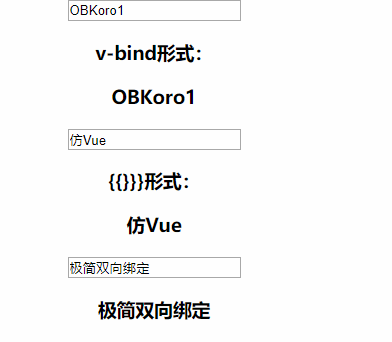
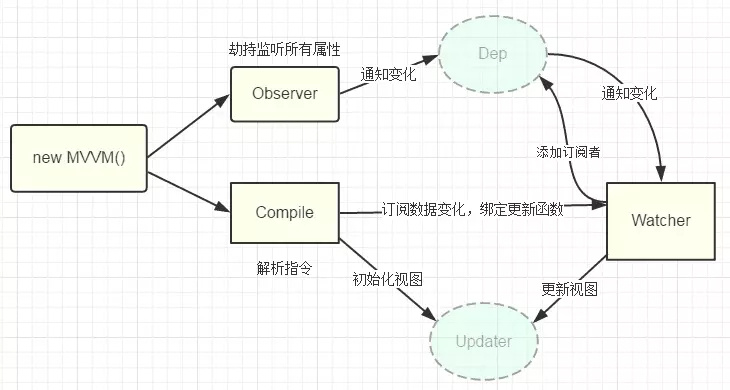

160行代码仿Vue实现极简双向绑定[详细注释]
前言
现在的前端面试不管你用的什么框架，总会问你这个框架的双向绑定机制，有的甚至要求你现场实现一个双向绑定出来，那对于没有好好研究过这方面知识的同学来说，当然是很难的，接下来本文用160行代码带你实现一个极简的双向绑定机制
效果GIF：

了解Object.defineProperty()
这个API是实现双向绑定的核心，最主要的作用是重写数据的
get、set方法
使用方式：
let obj = {
singer: "周杰伦"
};
let value = "青花瓷";
Object.defineProperty(obj, "music", {
// value: '七里香', // 设置属性的值 下面设置了get set函数 所以这里不能设置
configurable: false, // 是否可以删除属性 默认不能删除
// writable: true, // 是否可以修改对象 下面设置了get set函数 所以这里不能设置
enumerable: true, // music是否可以被枚举 默认是不能被枚举(遍历)
// ☆ get,set设置时不能设置writable和value，要一对一对设置，交叉设置/同时存在 就会报错
get() {
// 获取obj.music的时候就会调用get方法
// let value = "强行设置get的返回值"; // 打开注释 读取属性永远都是‘强行设置get的返回值’
return value;
},
set(val) {
// 将修改的值重新赋给song
value = val;
}
});
console.log(obj.music); // 青花瓷
delete obj.music; // configurable设为false 删除无效
console.log(obj.music); // 青花瓷
obj.music = "听妈妈的话";
console.log(obj.music); // 听妈妈的话
for (let key in obj) {
// 默认情况下通过defineProperty定义的属性是不能被枚举(遍历)的
// 需要设置enumerable为true才可以 否则只能拿到singer 属性
console.log(key); // singer, music
}
示例demo： demo
重点
- get,set设置时不能设置writable和value, 他们是一对情侣的存在，交叉设置或同时存在,会报错
- 通过
defineProperty设置的属性，默认不能删除，不能遍历，当然你可以通过设置更改他们。 - get、set 是函数，可以做的事情很多。
更详细的可以看一下MDN
实现思路：
mvvm系列的双向绑定，关键步骤：
- 实现数据监听器
Observer，用Object.defineProperty()重写数据的get、set，值更新就在set中通知订阅者更新数据。 - 实现模板编译
Compile，深度遍历dom树，对每个元素节点的指令模板进行替换数据以及订阅数据。 - 实现Watch用于连接
Observer和Compile，能够订阅并收到每个属性变动的通知，执行指令绑定的相应回调函数，从而更新视图。 - mvvm入口函数，整合以上三者。
流程图

具体代码实现：
html结构：
<div id="app">
<input type="text" v-model="name">
<h3 v-bind="name"></h3>
<input type="text" v-model="testData1">
<h3>{{ testData1 }}</h3>
<input type="text" v-model="testData2">
<h3>{{ testData2 }}</h3>
</div>
调用方法：
采用类Vue方式来使用双向绑定：
window.onload = function () {
var app = new myVue({
el: '#app', // dom
data: { // 数据
testData1: '仿Vue',
testData2: '极简双向绑定',
name: 'OBKoro1'
}
})
}
创建myVue函数：
实际上这里是我们实现思路中的第四步，用于整合数据监听器this._observer()、指令解析器this._compile()以及连接Observer和Compile的_watcherTpl的watch池。
function myVue(options = {}) { // 防止没传，设一个默认值
this.$options = options; // 配置挂载
this.$el = document.querySelector(options.el); // 获取dom
this._data = options.data; // 数据挂载
this._watcherTpl = {}; // watcher池
this._observer(this._data); // 传入数据，执行函数，重写数据的get set
this._compile(this.$el); // 传入dom，执行函数，编译模板 发布订阅
};
Watcher函数:
这是实现思路中的第三步，因为下方数据监听器_observer()需要用到Watcher函数，所以这里就先讲了。
像实现思路中所说的，这里起到了连接Observer和Compile的作用：
- 在模板编译_compile()阶段发布订阅
- 在赋值操作的时候，更新视图
// new Watcher() 为this._compile()发布订阅+ 在this._observer()中set(赋值)的时候更新视图 function Watcher(el, vm, val, attr) { this.el = el; // 指令对应的DOM元素 this.vm = vm; // myVue实例 this.val = val; // 指令对应的值 this.attr = attr; // dom获取值，如value获取input的值 / innerHTML获取dom的值 this.update(); // 更新视图 } Watcher.prototype.update = function () { this.el[this.attr] = this.vm._data[this.val]; // 获取data的最新值 赋值给dom 更新视图 }
实现数据监听器_observer()：
实现思路中的第一步，用Object.defineProperty()遍历data重写所有属性的get set。
然后在给对象的某个属性赋值的时候，就会触发set。
在set中我们可以监听到数据的变化，然后就可以触发watch更新视图。
myVue.prototype._observer = function (obj) {
var _this = this;
Object.keys(obj).forEach(key => { // 遍历数据
_this._watcherTpl[key] = { // 每个数据的订阅池()
_directives: []
};
var value = obj[key]; // 获取属性值
var watcherTpl = _this._watcherTpl[key]; // 数据的订阅池
Object.defineProperty(_this._data, key, { // 双向绑定最重要的部分 重写数据的set get
configurable: true, // 可以删除
enumerable: true, // 可以遍历
get() {
console.log(`${key}获取值：${value}`);
return value; // 获取值的时候 直接返回
},
set(newVal) { // 改变值的时候 触发set
console.log(`${key}更新：${newVal}`);
if (value !== newVal) {
value = newVal;
watcherTpl._directives.forEach((item) => { // 遍历订阅池
item.update();
// 遍历所有订阅的地方(v-model+v-bind+{{}}) 触发this._compile()中发布的订阅Watcher 更新视图
});
}
}
})
});
}
实现Compile 模板编译
这里是实现思路中的第三步，让我们来总结一下这里做了哪些事情：
- 首先是深度遍历dom树，遍历每个节点以及子节点。
- 将模板中的变量替换成数据，初始化渲染页面视图。
- 把指令绑定的属性添加到对应的订阅池中
- 一旦数据有变动，收到通知，更新视图。
myVue.prototype._compile = function(el) { var _this = this, nodes = el.children; // 获取app的dom for (var i = 0, len = nodes.length; i < len; i++) { // 遍历dom节点 var node = nodes[i]; if (node.children.length) { _this._compile(node); // 递归深度遍历 dom树 } // 如果有v-model属性，并且元素是INPUT或者TEXTAREA，我们监听它的input事件 if ( node.hasAttribute("v-model") && (node.tagName = "INPUT" || node.tagName == "TEXTAREA") ) { node.addEventListener( "input", (function(key) { var attVal = node.getAttribute("v-model"); // 获取v-model绑定的值 _this._watcherTpl[attVal]._directives.push( new Watcher(node, _this, attVal, "value") // 将dom替换成属性的数据并发布订阅 在set的时候更新数据 ); return function() { _this._data[attVal] = nodes[key].value; // input值改变的时候 将新值赋给数据 触发set=>set触发watch 更新视图 }; })(i) ); } if (node.hasAttribute("v-bind")) { // v-bind指令 var attrVal = node.getAttribute("v-bind"); // 绑定的data _this._watcherTpl[attrVal]._directives.push( new Watcher(node, _this, attrVal, "innerHTML") // 将dom替换成属性的数据并发布订阅 在set的时候更新数据 ); } var reg = /\{\{\s*([^}]+\S)\s*\}\}/g, txt = node.textContent; // 正则匹配 双括号｛{}｝ if (reg.test(txt)) { node.textContent = txt.replace(reg, (matched, placeholder) => { // matched匹配的文本节点包括｛{}｝, placeholder 是｛{}｝中间的属性名 var getName = _this._watcherTpl; // 所有绑定watch的数据 getName = getName[placeholder]; // 获取对应watch 数据的值 if (!getName._directives) { // 没有事件池 创建事件池 getName._directives = []; } getName._directives.push( new Watcher(node, _this, placeholder, "innerHTML") // 将dom替换成属性的数据并发布订阅 在set的时候更新数据 ); return placeholder.split(".").reduce((val, key) => { return _this._data[key]; // 获取数据的值 触发get 返回当前值 }, _this.$el); }); } } };
完整代码&demo地址
<!DOCTYPE html>
<head>
<title>仿Vue极简双向绑定</title>
</head>
<style>
#app {
margin-top: 3vh;
text-align: center;
}
</style>
<body>
<div style="margin:30px 20px">
<a href="javascript: void(0)" target="_blank">仿Vue实现极简双向绑定</a>
</div>
<div id="app">
<input type="text" v-model="name">
<div>
<div>
<div>
<div>
<div>
<h3>v-bind形式：</h3>
<h3 v-bind="name">dom 深度遍历</h3>
<h3>{{}}}形式：</h3>
<h3>{{ name }}</h3>
</div>
</div>
</div>
</div>
</div>
<input type="text" v-model="testData1">
<h3>{{ testData1 }}</h3>
<input type="text" v-model="testData2">
<h3>{{ testData2 }}</h3>
</div>
</body>
<script>
window.onload = function () {
var app = new myVue({ // 构造函数
el: '#app', // dom
data: {
testData1: '仿Vue',
testData2: '极简双向绑定',
name: 'OBKoro1'
}
})
}
// mvvm入口函数 用于整合 数据监听器_observer、 指令解析器_compile、连接Observer和Compile的_watcherTpl
function myVue(options = {}) { // 防止没传，设一个默认值
this.$options = options; // 配置挂载
this.$el = document.querySelector(options.el); // 获取dom
this._data = options.data; // 数据挂载
this._watcherTpl = {}; // watcher池
this._observer(this._data); // 传入数据，执行函数，重写数据的get set
this._compile(this.$el); // 传入dom，执行函数，编译模板 发布订阅
};
// 重写data 的 get set 更改数据的时候，触发watch 更新视图
myVue.prototype._observer = function (obj) {
var _this = this;
Object.keys(obj).forEach(key => { // 遍历数据
_this._watcherTpl[key] = { // 每个数据的订阅池()
_directives: []
};
var value = obj[key]; // 获取属性值
var watcherTpl = _this._watcherTpl[key]; // 数据的订阅池
Object.defineProperty(_this._data, key, { // 双向绑定最重要的部分 重写数据的set get
configurable: true, // 可以删除
enumerable: true, // 可以遍历
get() {
console.log(`${key}获取值：${value}`);
return value; // 获取值的时候 直接返回
},
set(newVal) { // 改变值的时候 触发set
console.log(`${key}更新：${newVal}`);
if (value !== newVal) {
value = newVal;
watcherTpl._directives.forEach((item) => { // 遍历订阅池
item.update();
// 遍历所有订阅的地方(v-model+v-bind+{{}}) 触发this._compile()中发布的订阅Watcher 更新视图
});
}
}
})
});
}
// 模板编译
myVue.prototype._compile = function (el) {
var _this = this, nodes = el.children; // 获取app的dom
for (var i = 0, len = nodes.length; i < len; i++) { // 遍历dom节点
var node = nodes[i];
if (node.children.length) {
_this._compile(node); // 递归深度遍历 dom树
}
// 如果有v-model属性，并且元素是INPUT或者TEXTAREA，我们监听它的input事件
if (node.hasAttribute('v-model') && (node.tagName = 'INPUT' || node.tagName == 'TEXTAREA')) {
node.addEventListener('input', (function (key) {
var attVal = node.getAttribute('v-model'); // 获取v-model绑定的值
_this._watcherTpl[attVal]._directives.push(new Watcher( // 将dom替换成属性的数据并发布订阅 在set的时候更新数据
node,
_this,
attVal,
'value'
));
return function () {
_this._data[attVal] = nodes[key].value; // input值改变的时候 将新值赋给数据 触发set=>set触发watch 更新视图
}
})(i));
}
if (node.hasAttribute('v-bind')) { // v-bind指令
var attrVal = node.getAttribute('v-bind'); // 绑定的data
_this._watcherTpl[attrVal]._directives.push(new Watcher( // 将dom替换成属性的数据并发布订阅 在set的时候更新数据
node,
_this,
attrVal,
'innerHTML'
))
}
var reg = /\{\{\s*([^}]+\S)\s*\}\}/g, txt = node.textContent; // 正则匹配{{}}
if (reg.test(txt)) {
node.textContent = txt.replace(reg, (matched, placeholder) => {
// matched匹配的文本节点包括{{}}, placeholder 是{{}}中间的属性名
var getName = _this._watcherTpl; // 所有绑定watch的数据
getName = getName[placeholder]; // 获取对应watch 数据的值
if (!getName._directives) { // 没有事件池 创建事件池
getName._directives = [];
}
getName._directives.push(new Watcher( // 将dom替换成属性的数据并发布订阅 在set的时候更新数据
node,
_this,
placeholder,
'innerHTML'
));
return placeholder.split('.').reduce((val, key) => {
return _this._data[key]; // 获取数据的值 触发get 返回当前值
}, _this.$el);
});
}
}
}
// new Watcher() 为this._compile()发布订阅+ 在this._observer()中set(赋值)的时候更新视图
function Watcher(el, vm, val, attr) {
this.el = el; // 指令对应的DOM元素
this.vm = vm; // myVue实例
this.val = val; // 指令对应的值
this.attr = attr; // dom获取值，如value获取input的值 / innerHTML获取dom的值
this.update(); // 更新视图
}
Watcher.prototype.update = function () {
this.el[this.attr] = this.vm._data[this.val]; // 获取data的最新值 赋值给dom 更新视图
}
</script>